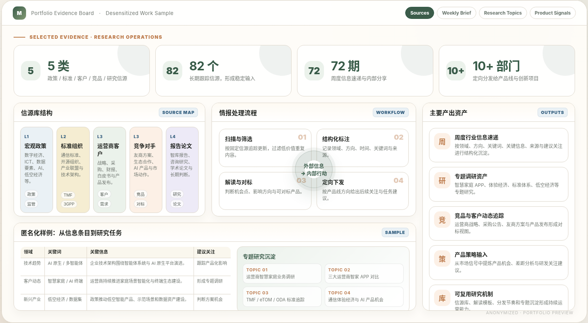
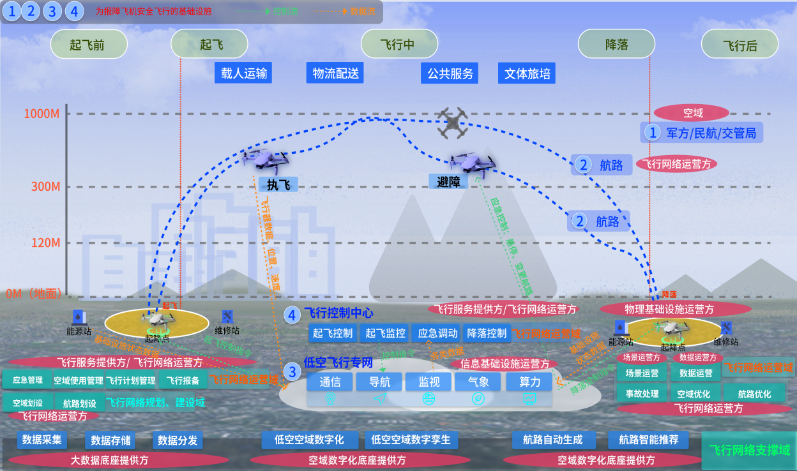

AI 产品与 智能体产品化
关注智能体如何从能力集合，变成可理解、可管理、可发布、可运营的产品体系。
我曾参与低空经济、AI 产品体系规划和电信行业情报体系搭建，擅长把复杂行业信息整理成可判断、可传播、可落地的分析框架。
贴 JD 或选下方示例，30 秒内告诉你。
关注智能体如何从能力集合，变成可理解、可管理、可发布、可运营的产品体系。
关注大模型商业化、Agent 产品化、AI 应用落地和企业付费意愿等议题，并通过公开文章持续补齐 AI 行业判断。
关注如何把电信行业情报体系搭建经验迁移到 AI 行业，用 AI 工具提升信息采集、资料整理、分析写作和内部分享效率。
从 0 到 1 搭建情报机制 · 推动公司第一部白皮书 · 把 170+ 智能体翻译成产品。

从 0 到 1 搭建公司电信行业情报体系，覆盖宏观政策、标准组织、四大运营商客户和竞争对手四类维度，并形成每周行业信息采集、整理和内部分享机制。
查看详情 →参与低空经济项目从 0 到 1 立项推动，完成前期行业研究、业务研究、系统架构相关内容参与、白皮书撰写，并在展会上进行产品演讲推广。
查看详情 →
基于公司已有 170+ 智能体，参与智能体产品体系分类、门户规划设计、产品发布直播策划与脚本策划，并承担 AI 产品白皮书框架搭建、第二章节撰写与全文整合工作。
查看详情 →